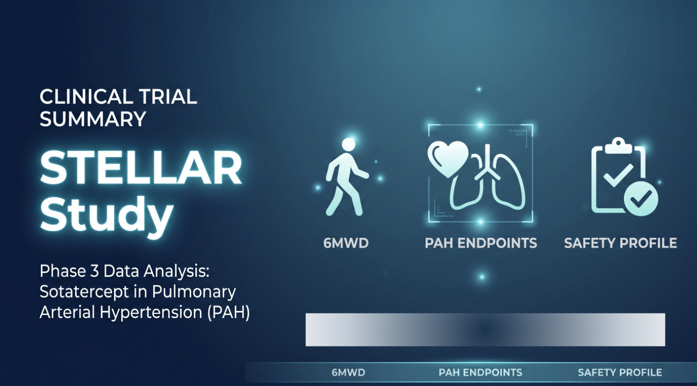

DRY LAB
Bioinformatics
RNA-seq, ScRNA-seq, ChIPseq, RRBS, variant-calling, Omics-data, R/Python.
PHD · BIOMEDICAL & CLINICAL SCIENCES
I study disease mechanisms at the bench and communicate them at the page — moving between bioinformatic analysis and clinical & medical writing. This is a running record of my publications, tools, and current projects.
"DNA is a cookbook — it has every recipe to make you, you."
EXPERTISE
DRY LAB
RNA-seq, ScRNA-seq, ChIPseq, RRBS, variant-calling, Omics-data, R/Python.
TRIALS
Study design, biostatistics, GCP-compliant data handling, clinical data.
MANUSCRIPTS
Peer-reviewed manuscripts, regulatory documents, patient-facing summaries, clinical trials summaries.
WET LAB
Western blotting, PCR, Immunofluorescence, DNA/RNA, Flow cytometry, Cell culture.
RESEARCH
EPIGENETICS · PAH
Analyzed DNA methylation data to compute epigenetic age and age acceleration across PAH tissues and blood, revealing accelerated biological aging in disease.
Read more →PHARMACOTRANSCRIPTOMICS · PAH
Identified differentially expressed genes in PAH and used connectivity-mapping databases to find drug candidates capable of reversing the disease's pathological signature.
Read more →PUBLICATIONS
Breast Cancer Reveals Latent BMPR2-Related Susceptibility to Pulmonary Hypertension
Unraveling AURKB as a Potential Therapeutic Target in Pulmonary Hypertension Using Integrated Transcriptomic Analysis and Pre-Clinical Studies
Multiomics Integration for Identifying Treatment Targets, Drug Development, and Diagnostic Designs in PAH
Exploring Integrin α5β1 as a Potential Therapeutic Target for Pulmonary Arterial Hypertension: Insights from Comprehensive Multicenter Preclinical Studies
ATP Citrate Lyase Drives Vascular Remodeling in Systemic and Pulmonary Vascular Diseases Through Metabolic and Epigenetic Changes
Time Is Running Out in Pulmonary Arterial Hypertension: The Epigenetic Clock Is Clicking
CONFERENCES
Narciclasine as a Novel Therapeutic Target for Pulmonary Arterial Hypertension: Addressing Glycosylation in Disease Pathophysiology
Increased DNA Methylation: A Potential Therapeutic Target in Pulmonary Arterial Hypertension
Hypomethylating Drugs Improve Pulmonary Vascular Remodelling and Alleviate Pulmonary Hypertension Development in a Preclinical Model of the Disease
Targeting DNA Hypermethylation With Hypomethylating Drugs: Implications for Pulmonary Arterial Hypertension
Epigenome-Wide-Association-Study Characterizes DNA Methylation Changes Associated With Lung and Right Ventricle Dysfunction in Pulmonary Hypertension
BIOINFORMATICS TUTORIALS/PROJECTS
TUTORIAL · R / SEURAT
A walkthrough covering FASTQ-to-count-matrix processing, QC, normalization, and clustering for single-cell RNA-seq data.
Read tutorial →MEDICAL WRITING AND SCIENTIFIC COMMUNICATION

CLINICAL TRIAL SUMMARY
A clinical briefing note on Sotatercept, a first-in-class activin receptor ligand trap for PAH, summarizing the STELLAR Phase 3 trial's efficacy and safety data and its implications for clinical practice.
Read sample →CONTACT
Open to collaborations in bioinformatics, clinical research, and medical writing.